XVI. WAHRSCHEINLICHKEITSRECHNUNG
A. Elementare Kombinatorik
B. Wahrscheinlichkeit und Häufigkeit
C. Wahrscheinlichkeitsalgebra
D. Bedingte Wahrsch. und Unabhängigkeit
E. Zerlegungen und Baumdiagramme
 Ergänzungen und Details
Ergänzungen und DetailsEine Variation ist eine Liste mit k Positionen, wobei für jede Position dieselben n Einträge zur Verfügung stehen und zwar unabhängig davon, was in den anderen Positionen steht. Mengentheoretisch ist das ein k-Tupel der Produktmenge Ak (mit A als Menge der n möglichen Einträge):
• Anzahl aller Variationen = nk
Aufgabe 1: Wie viel Möglichkeiten gibt es, um einen Fußball-Totoschein für 12 Spiele auszufüllen, wenn bei jedem Spiel eingetragen wird, ob die Heim- oder Gastmannschaft gewinnt oder unentschieden gespielt wird?
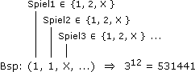
Den Listenbegriff können wir insoweit verallgemeinern, als nicht notwendig ist, dass für alle Positionen dieselben Einträge zur Verfügung stehen. Mengentheoretisch ist das dann ein k-Tupel der Produktmenge A1x ... xAk (mit Ai als Menge der ni möglichen Einträge für die i-te Position):
Anzahl aller solchen Listen = n1· ... ·nk
Aufgabe 2: Ein Auto gibt es in den Farben blau, grau, rot, silber und weiß. Heckspoiler, Klimaanlage und Schiebedach sind als Zusatzaustattung im Angebot. Wie viel Modelle muss ein Autohändler auf Lager haben, damit er jedem sein Wunschauto vorführen kann?
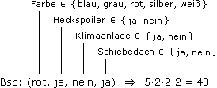
2 Permutationen
Eine Permutation ist eine Anordnung von n verschiedenen Objekten in einer Reihe. Das sind n Möglichkeiten, um ein Objekt auszuwählen und auf die erste Position zu setzen. Für jede dieser Möglichkeiten eröffnen sich n–1 weitere, um die zweite Position zu besetzen, usw.
• Anzahl aller Permutationen = n! := n(n–1)...1 (0! := 1)

"n Fakultät"
Aufgabe 3: Ein Kleinbus mit 8 Sitzplätzen bringt ebensoviel Kinder zur Schule. Auf wie viel Arten können sie Platz nehmen?
Wir nummerieren die Plätze, stellen die Kinder hintereinander auf und setzen das erste auf Platz1, das zweite auf Platz2 usw. So gesehen geht es um die Anzahl der Möglichkeiten, 8 Kinder in einer Reihe anzuordnen:
8! = 40320
Bem: Auch wenn sie jeden Tag eine andere Möglichkeit wählen, erleben sie den Tag nicht, an dem alle ausgeschöpft sind. (110 Jahre!)
Anordnung mit Wiederholung: Sind die anzuordnenden Objekte nicht alle verschieden, dann zerfallen sie in Gruppen gleicher Objekte. In einem ersten Schritt unterscheiden wir gleiche Objekte und schreiben alle Permutationen untereinander. Wenn wir dann die k Objekte einer Gruppe wieder identifizieren, verschmelzen jeweils k! Zeilen (die die Gruppenmitglieder an denselben Positionen haben und außerhalb davon gleich sind).
Am Beispiel einer 50-Cent- und zweier 1-Euro-Münzen:
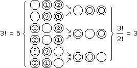
Aufgabe 4: Ein Zug verkehrt mit 4 Zweite-Klasse-Wagen, 2 Erste-Klasse-Wagen und 1 Speisewagen. Wie viel verschiedene Wagenreihenfolgen gibt es, wenn Wagen derselben Klasse nicht unterschieden werden?
(4 + 2 + 1)!
4!2!1!
3 Kombinationen
Eine Kombination ist eine ungeordnete Auswahl vom Umfang k aus n verschiedenen Objekten. Bezogen auf eine feste Reihenfolge der Elemente, entspricht jede Auswahl einer Anordnung von k Einsen (ausgewählt) und n–k Nullen (nicht ausgewählt):
• Anzahl aller Kombinationen = 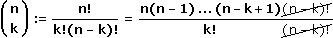
"n über k"
Bem: Die "n über k" heißen auch Binomialkoeffizienten, weil
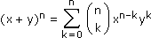
Aufgabe 5: Bei einem Schachturnier mit 15 Teilnehmern muss jeder einmal als Weiß und einmal als Schwarz gegen jeden anderen spielen. Wie viel Spiele sind auszutragen?
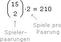
Auswahl mit Wiederholung: Es geht um eine ungeordnete Auswahl vom Umfang k aus einem Pool, in dem n verschiedene Objekte und zu jedem davon ausreichend gleiche vorhanden sind. Um eine Auswahl zu kodieren, gehen wir die n Gruppen in einer festen Reihenfolge durch, notieren eine Eins für jedes ausgewählte Objekt und eine Null als Trennzeichen.
Aufgabe 6: Fritzchen holt sich 6 Stück aus einer Packung mit Ananas-, Orangen- und Zitronenbonbons. Wie viel Möglichkeiten hat er?
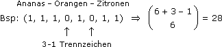
Bei gleichen Rahmenbedingungen hat ein determiniertes Experiment immer den gleichen Ausgang, ein Zufallsexperiment wie das Würfeln hat verschiedene Ausgänge. Wann Rahmenbedingungen als gleich gelten (und was als Ausgang gilt), bestimmt ein meist unausgesprochener Konsens. Die Chance für einen bestimmten Ausgang, realisiert zu werden, muss jedenfalls gleich bleiben ("Würfel haben kein Gedächtnis").
Elementarereignisse sind Ausgänge derart, dass bei jeder Experimentausführung genau einer davon eintritt und die Ereignisse, die von Interesse sind, als Vereinigung von Elementarereignissen darstellbar sind. Ereignisse A, B sind also Teilmengen vom sicheren Ereignis Ω, der Vereinigung aller Elementarereignisse, und bilden als solche eine Boole'sche Algebra mit den Operatoren:
Komplement: A = Ereignis, dass A nicht eintritt (d.h. Ausgang des Experiments ist ein Elementarereignis, das nicht in A liegt)
Durchschnitt: A  B = Ereignis, dass A und B eintritt (d.h. Ausgang des Experiments ist ein Elementarereignis, das in A und B liegt)
B = Ereignis, dass A und B eintritt (d.h. Ausgang des Experiments ist ein Elementarereignis, das in A und B liegt)
B = Ereignis, dass A und B eintritt (d.h. Ausgang des Experiments ist ein Elementarereignis, das in A und B liegt)
Vereinigung: A  B = Ereignis, dass A oder B eintritt (d.h. Ausgang des Experiments ist ein Elementarereignis, das in A oder B liegt)
B = Ereignis, dass A oder B eintritt (d.h. Ausgang des Experiments ist ein Elementarereignis, das in A oder B liegt)
B = Ereignis, dass A oder B eintritt (d.h. Ausgang des Experiments ist ein Elementarereignis, das in A oder B liegt)2 Wahrscheinlichkeit nach Laplace
Im Folgenden geht es um Experimente mit nur endlich vielen Elementarereignissen. Wenn diese – etwa aus Symmetrieüberlegungen heraus – gleich wahrscheinlich sind, sprechen wir von einem Laplace-Experiment und definieren die Wahrscheinlichkeit eines Ereignisses A so:
• P(A) :=
|A|
|Ω|
Anzahl für A günstiger Fälle
Anzahl möglicher Fälle
Aufgabe 8: Ein Würfel wird 2-mal geworfen. Wie groß ist die Wahrscheinlichkeit, dass die Augensumme zweistellig ist?
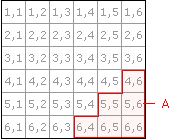
Elementarereignisse = (gleich wahrscheinliche) 2-Tupel mit Zahlen 1-6
A = Ereignis, dass Augensumme zweistellig ist
P(A) = = = 0,17
Elementarereignisse = (gleich wahrscheinliche) 2-Tupel mit Zahlen 1-6
A = Ereignis, dass Augensumme zweistellig ist
P(A) =
|A|
|Ω|
6
36
3 Gesetz der großen Zahlen
Wenn wir ein Zufallsexperiment unter gleichen Rahmenbedingungen mehrmals ausführen und mitzählen, wie oft ein Ereignis A eintritt, bekommen wir die relative Häufigkeit des Ereignisses A in dieser Versuchsreihe als:
h(A) :=
wie oft A eingetreten ist
Anzahl der Versuche
Der Sinn der Wahrscheinlichkeit erschließt sich aus dem Gesetz der großen Zahlen, wonach mit zunehmendem Versuchsumfang
h(A) f.s.
 P(A).
P(A).Was "fast sicher" bedeuten soll, illustrieren wir am Münzwurf-Experiment und dem Ereignis A="Kopf". Wir wählen ein ε>0 und stellen uns vor, dass sich das Universum bei jedem Wurf spaltet, wobei im einen "Kopf" und im anderen "Zahl" eintritt. Nach n Würfen haben wir 2n Paralleluniversen und schauen, wie groß der Prozentsatz derer ist, in denen
|h(A) – P(A| < ε.
Dieser Prozentsatz läuft mit zunehmendem n gegen 100% (je kleiner ε > 0 gewählt wurde, umso langsamer, aber letztlich immer).
Beispiel: ε = 0,15
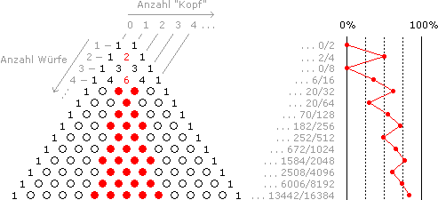
Wo keine Wahrscheinlichkeiten bekannt sind, müssen wir sie kombinatorisch bestimmen oder über Versuchsreihen schätzen. Darüber hinaus gibt es Wahrscheinlichkeitsregeln, die aus der Laplace-Definition folgen und es ermöglichen, aus bekannten Wahrscheinlichkeiten weitere zu berechnen:
• Additionsregel: P(A
 B) = P(A) + P(B) – P(A
B) = P(A) + P(B) – P(A  B)
B)Beweis: |A
B| = |A| + |B| – |A B| |:|Ω|• Subtraktionsregel: P(A\B) = P(A) – P(A
B)Beweis: |A\B| = |A| – |A
B| |:|Ω|• Komplementregel: P(A) = 1 – P(A)
Beweis: |A| = |Ω| – |A| |:|Ω|
Aufgabe 9: Bei einer Produktionsserie von Elektromotoren haben sich Fehler eingeschlichen: Bei 5% der Motoren ist der Anker nicht in Ordnung, 9% haben defekte Bürsten und 2% haben beide Fehler. Wie groß ist die Wahrscheinlichkeit, dass ein zufällig ausgewählter Motor a) mindestens einen Fehler aufweist, b) nur defekte Bürsten hat, c) einen einwandfreien Anker hat?
A = Ereignis, dass Anker defekt
B = Ereignis, dass Bürsten defekt
Geg: P(A) = 0,05 P(B) = 0,09 P(A
B) = 0,02a) P(A
B) = P(A) + P(B) – P(A B) = 0,12b) P(B\A) = P(B) – P(A
B) = 0,07c) P(A) = 1 – P(A) = 0,95
... bewertet die Wahrscheinlichkeit für ein Ereignis A mit dem Wissen (= unter der Bedingung), dass ein Ereignis B eintritt:
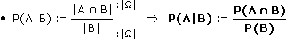
"unter"
Für die (im Hinblick auf das Gesetz der großen Zahlen) zugehörige relative Häufigkeit von A heißt das, dass alle Versuche, bei denen B nicht eintritt, aus der Versuchsreihe gestrichen und mit dem Rest wie gehabt verfahren wird.
Aufgabe 10: Ein Würfel wird geworfen und man erhält die Information, dass kein 6er gewürfelt wurde. Wie groß ist jetzt die Wahrscheinlichkeit, dass die Augenzahl gerade ist?
A = Ereignis, dass Augenzahl gerade ist = {2, 4, 6}
B = Ereignis, dass Augenzahl nicht 6 ist = {1, 2, 3, 4, 5}
P(A|B) =
|A B|
B||B|
2
5
2 Die Multiplikationsregel
... ist die nach P(A
B) aufgelöste Definition der bedingten Wahrscheinlichkeit P(A|B) bzw. P(B|A):|
• P(A B)
|

|
P(A|B)P(B) P(B|A)P(A) |
Aufgabe 11: Anton und Berta besuchen dieselbe Klasse. Anton fehlt mit einer Wahrscheinlichkeit von 20%, Berta mit einer Wahrscheinlichkeit von 15%. Die Wahrscheinlichkeit, dass Anton fehlt, wenn Berta fehlt, liegt bei 40%. Mit welcher Wahrscheinlichkeit sind beide anwesend?
A = Ereignis, dass Anton fehlt
B = Ereignis, dass Berta fehlt
Geg: P(A) = 0,20 P(B) = 0,15 P(A|B) = 0,40
Schritt 1: Wir berechnen zuerst das Ereignis, dass Anton oder Berta fehlt.
P(A
B) = P(A) + P(B) – P(A B) = P(A) + P(B) – P(A|B)P(B) = 0,29Schritt 2: Das gesuchte Ereignis ist dann das Komplement davon.
P("beide anwesend") = 1 – 0,29 = 0,71
Bem: Wir können auch unmittelbar nach dem gesuchten Ereignis fragen und die De Morgan'schen Gesetze anwenden.
P(A
B) = P(A B) = 1 – P(A B) = ...3 Unabhängige Ereignisse
Zwei Ereignisse heißen unabhängig, wenn das Wissen um das Eintreten des einen nichts an der Wahrscheinlichkeitsbewertung des anderen ändert, was dann automatisch auch in umgekehrter Richtung gilt:
P(A|B) = P(A) bzw. P(B|A) = P(B)
Die Multiplikationsregel für unabhängige Ereignisse lautet dementsprechend:
• P(A
B) = P(A)P(B)Bem: Die Multiplikationsregel ist selbst ein Kriterium für Unabhängigkeit, d.h. die Unabhängigkeit mehrerer Ereignisse wird auch so definiert, dass für alle Durchschnitte die Wahrscheinlichkeit das Produkt der Einzelwahrscheinlichkeiten sein muss.
Aufgabe 12: Ein Würfel wird 2-mal geworfen. A ist das Ereignis, dass die Augensumme zweistellig ist, und B das Ereignis, dass die erste Augenzahl a) 2-4, b) 3-5, c) 4-6 ist. Bestimme die bedingten Wahrscheinlichkeiten und beantworte, ob A und B unabhängig sind.
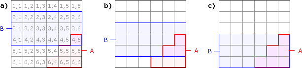
P(A|B) = < P(A)P(A|B) = = P(A)P(A|B) = > P(A)
1
18
3
18
6
18
P(B|A) = < P(B)P(B|A) = = P(B)P(B|A) = > P(B)
1
6
3
6
6
6
 A, B negativ gekoppelt
A, B unabhängig
A, B positiv gekoppelt
A, B negativ gekoppelt
A, B unabhängig
A, B positiv gekoppeltEine Zerlegnung von Ω sind Ereignisse, die sich nirgends überdecken und deren Vereinigung Ω ergibt. Die Elementarereignisse sind gewissermaßen die feinste Zerlegung, das andere Extrem ist eine Zerlegung in ein Ereignis und sein Gegenereignis.
| 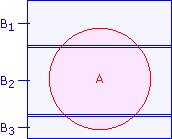 |
Bilden beispielsweise B1, B2, B3 eine Zerlegung von Ω, dann folgt für ein beliebiges Ereignis A: A = (A B1) (A B2) (A B3)Der Satz von der totalen Wahrscheinlichkeit folgt daraus über Additions- und Multiplikationsregel: • P(A) = P(A|B1)P(B1) + P(A|B2)P(B2) + P(A|B3)P(B3) |
Aufgabe 13: Für das Bürgermeisteramt gibt es 4 Kandidaten, deren Wahlchancen bei 30%, 25%, 10% und 35% liegen. Die Wahrscheinlichkeit, dass sie als Bürgermeister ein bestimmtes Projekt realisieren, liegt bei 40%, 20%, 80%, 60%. Mit welcher Wahrscheinlichkeit wird das Projekt realisiert?
A = Ereignis, dass das Projekt realisiert wird
Bi = Ereignis, dass der i-te Kandidat Bürgermeister wird
Geg: P(B1) = 0,30 P(A|B1) = 0,40
P(B2) = 0,25 P(A|B2) = 0,20
P(B3) = 0,10 P(A|B3) = 0,80
P(B4) = 0,35 P(A|B4) = 0,60
Ges: P(A) = P(A|B1)P(B1) + P(A|B2)P(B2) + P(A|B3)P(B3) + P(A|B4)P(B4) = 0,46
2 Der Satz von Bayes
Der Satz von Bayes beantwortet in der obigen Situation die Frage nach den umgedrehten bedingten Wahrscheinlichkeiten:
• P(Bi|A) =
P(Bi A)
A)P(A)
P(A|Bi)P(Bi)
totale Wahrscheinlichkeit
Aufgabe 14: Ein Angestellter fährt in 50% aller Fälle mit dem Auto zur Arbeit, in 20% aller Fälle mit dem Bike und in 30% aller Fälle mit dem Citybus. Bei 14% aller Autofahrten, 9% aller Bikefahrten und 4% aller Citybusfahrten verspätet er sich. Wie groß ist die Wahrscheinlichkeit, dass er mit dem Auto gefahren ist, wenn er verspätet zur Arbeit kommt?
A = Ereignis, dass der Angestellte verspätet zur Arbeit kommt
B1, B2, B3 = Ereignis, dass er mit dem Auto, Bike, Citybus fährt
Geg: P(B1) = 0,50 P(A|B1) = 0,14
P(B2) = 0,20 P(A|B2) = 0,09
P(B3) = 0,30 P(A|B3) = 0,04
Ges: P(B1|A) =
P(B1 A)
A)P(A)
P(A|B1)P(B1)
P(A)
Satz von der totalen Wahrscheinlichkeit: P(A) = P(A|B1)P(B1) + P(A|B2)P(B2) + P(A|B3)P(B3) = 0,10
(*) =
0,14·0,50
0,10
3 Baumdiagramme
Wenn wir über eine erste Zerlegung von Ω eine zweite legen, bilden die Schnittmengen eine neue, feinere Zerlegung. Zum Beispiel:
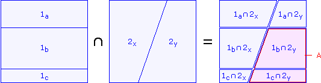
Sobald die Zerlegungsteile so fein sind, dass wir ein Ereignis A damit zusammenbauen können, ist wie gehabt:
P(A) = P(1b
2y) + P(1c2y) = P(2y|1b)P(1b) + P(2y|1c)P(1c)Typischerweise tritt diese Situation beim mehrstufigen Experiment auf, wo jede Experimentstufe eine Zerlegung einbringt. Zur Veranschaulichung hat sich das Baumdiagramm bewährt, bei dem die Zerlegungsteile zu "Pfaden" werden und P(A) so berechnet wird, dass die Wahrscheinlichkeiten längs der zu A gehörigen Pfade multipliziert und die Ergebnisse addiert werden:
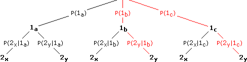
Aufgabe 15: Eine Urne enthält 3 rote, 1 grüne und 4 blaue Kugeln. Zuerst wird eine Kugel gezogen und beiseite gelegt, dann eine zweite. Wie groß ist die Wahrscheinlichkeit, dass beide Kugeln dieselbe Farbe haben?
ir, ig, ib = Ereignis, dass i-ter Zug eine rote, grüne, blaue Kugel ergibt
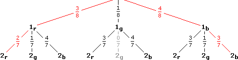
P("gleichfarbig") =
3
8
2
7
4
8
3
7
Weitere Lösungsvariante (kombinatorisch):
Wie nummerieren die Kugeln, sodass 1-3 = rot, 4 = grün, 5-8 = blau
Elementarereignisse = (gleich wahrscheinliche) 2-Tupel mit verschiedenen Zahlen 1-8
P("gleichfarbig") =
3·2 + 4·3
8·7